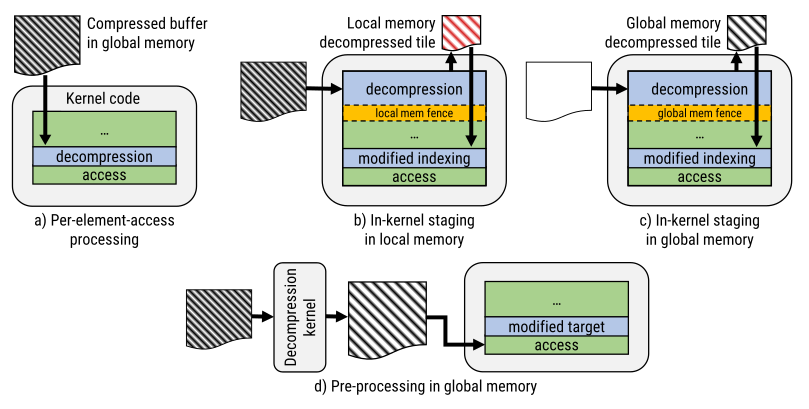

Background
High-performance data compression can alleviate capacity bottlenecks and even improve performance in GPU compute applications, by reducing memory bandwidth requirements. However, integrating compression throughout the entire data processing pipeline is a non-trivial tasks, especially in multi-GPU environments, and doing so manually might encode assumption that make it difficult to test other compression methods.
UMUGUC is a research project that aims to provide a simple-declarative API which allows a runtime system to transparently map accesses to compressed data representations, without requiring any compression-specific code in user programs.
Make it easy to work with end-to-end compressed (dense) data in multi-GPU programs.
Overview
UMUGUC will offer a simple declarative extension on top of existing buffer abstractions (used in GPU programming models such as SYCL) to allow users to specify that a buffer should be compressed, and to specify either the constraints on compression, or the compression method directly. The former allows the runtime to select the best compression method to achieve the desired quality on the current hardware, while the latter enable users to experiment with different compression methods.
The API is currently not finalized, but might look somewhat like this:
namespace c = celerity::compression;
auto range = celerity::range<2>(height, width);
using input_comp = celerity::compressed<c::lossy<12>>;
celerity::buffer image_input_buf(image_input.data(), range);
using tmp_comp = celerity::compressed<c::ndzip<2,16>>;
celerity::buffer image_tmp_buf(range);
The runtime system will then implement the necessary data movement and compression/decompression operations to ensure that the user program can work with the compressed data as if it were uncompressed and of the base type. Depending on the constraints imposed by factors such as the available local and global memory, and the access granularity afforded by the compression method, the runtime system will choose different implementation strategies, as outlined in the figure below for the decompression case:

Technology
UMUGUC is built on top of the Celerity runtime system, which provides a high-level programming model for distributed-memory clusters of GPUs. Celerity is built on top of the Khronos SYCL standard, and provides a data-parallel multi-GPU programming model with a single-source C++ interface. The UMUGUC project will extend Celerity with the necessary abstractions to support end-to-end data compression.
Partners & Funding
UMGUC is funded by the Austrian Research Promotion Agency (FFG) under the BRIDGE programme.
The project partners are the University of Innsbruck, and AirborneHydroMapping GmbH.
UMUGUC is coordinated by Peter Thoman.